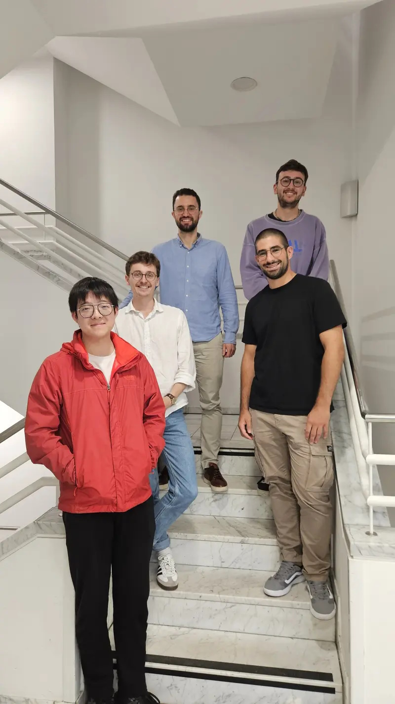

Learning on Graphs
At the Learning on Graphs group, led by Christopher Morris at the Chair of Machine Learning and Reasoning at RWTH Aachen University, we are developing theoretical and practical approaches to machine learning on graphs. Machine learning on graphs is a relatively new field in machine learning that develops methods that automatically make predictions about graph properties. Our work is characterized by examining practical methods in terms of their theoretical properties.
We are happy to work with interested and dedicated students on these problems. Refer to thesis guidelines for further information.